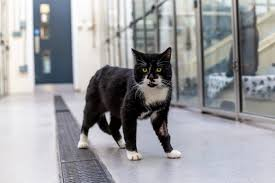

Mapping Sri Lanka Portuguese at present is an interactive map tool that visualises the results of a sociolinguistic survey that aimed at establishing the current status of Sri Lanka Portuguese regarding its distribution (in terms of geography, demography, and social group), degree of transmission, and domains of use.
The survey took the form of a sociolinguistic questionnaire which was to be anonymously filled by Portuguese Burgher households (including families in which only some of the members identify as Burghers) in four districts: Ampara, Batticaloa, Jaffna, and Trincomalee. Since the size of the community is relatively small, the survey was designed to be filled in by the entire population, and not a sample of members, although some occasional gaps and oversights are to be expected.
Between 2017 and 2023, the survey resulted in 937 filled questionnaires (one per household), totaling 3145 respondents in the aforementioned districts.
A language in its own right, Sri Lanka Portuguese is the native language of the so-called Portuguese Burghers, i.e. Eurasians of Portuguese descent.
A language in its own right, Sri Lanka Portuguese is the native language of the so-called Portuguese Burghers, i.e. Eurasians of Portuguese descent.
Patrícia Costa

João Rodrigues
Rui Pereira

Hugo C. Cardoso
Costa, Patrícia. João Rodrigues, Rui Pereira & Hugo C. Cardoso. 2024. Mapping Sri Lanka Portuguese at present [Website]. http://www.mappingsrilankaportuguese.github.io.
The data presented in this site is made available under a Creative Commons BY-NC licence, which enables reusers to distribute, remix, adapt, and build upon the material in any medium or format for noncommercial purposes only, and only so long as attribution is given to the creators.
If you have any questions about the website, data, or survey, please get in touch via email at patriciacosta1 [at] campus [dot] ul [dot] pt.